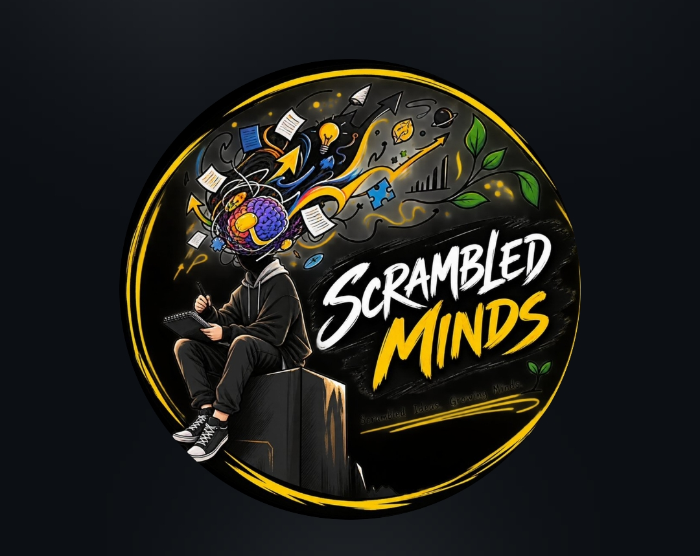

SCRAMBLED MINDS / MEMBER NODE
Capture console
Private research, routed with purpose.
Turn capture on for project research. Turn it off for personal AI conversations.
IDENTITY STATUS
Prepare this copy before use.Scoped to your assigned project workspace06PLATFORMSLOCALPRIVACY MODEREADYRELAY STATE
CAPTURE ENGINE
Project conversation capture
Capture is only active when you explicitly enable it. Personal conversations remain protected.
CONNECTED SURFACES
C✦✦PD×Conversation adapters armed